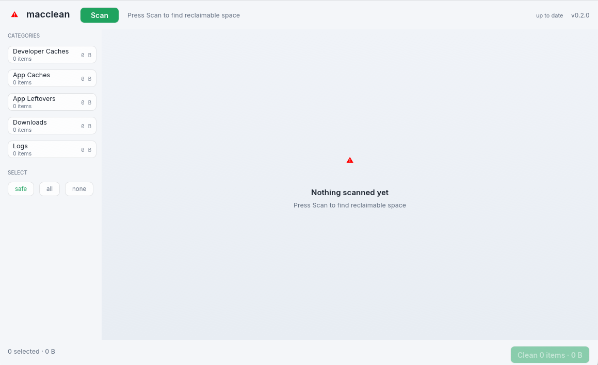

macclean finds caches, logs, and data left behind by uninstalled apps — then deletes through the Trash, so every cleanup is undoable. Nothing is removed until you say so.
Apple Silicon · macOS 11+ · MIT license

Only regenerable targets are pre-ticked: caches, derived data, logs. Anything that needs judgement shows as review and stays unticked.
Every deletion goes through NSFileManager — the same
mechanism Finder uses. Changed your mind? Open Trash and
Put Back. Live logs are truncated
in place, not moved.
Orphaned LaunchAgents, preference files, and leftover directories from apps you deleted months ago — matched against what's still installed, so nothing you use gets flagged.
| Category | Examples | Default |
|---|---|---|
| Developer caches | Xcode DerivedData, npm/pip/uv caches, Rust target dirs, simulator devices | safe |
| App caches | Spotify, Discord, Slack, Chrome cache directories | safe |
| App leftovers | Application Support, Preferences, LaunchAgents of uninstalled apps | review |
| Downloads | .dmg / .pkg installers you've already run | review |
| Logs | ~/Library/Logs, Homebrew logs — truncated, not moved | safe |
| Commands | brew cleanup -s, xcrun simctl delete unavailable |
safe |
The app isn't notarized yet. On first launch macOS says it "can't be opened" — right-click the app → Open → Open anyway. From then on it launches normally. Source and build workflow are public on GitHub.